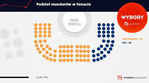

Wyniki wyborów do Sejmu RP
| Kandydat | Komitet | Liczba głosów | Procent głosów | Wyniki |
| CHRÓŚCIKOWSKI Jerzy Mieczysław | KOMITET WYBORCZY PRAWO I SPRAWIEDLIWOŚĆ | 26 501 | 52,13% | Kandydat uzyskał mandat |
| LIPIEC Marek | KOALICYJNY KOMITET WYBORCZY KOALICJA OBYWATELSKA PO .N IPL ZIELONI | 9 749 | 4 | Kandydat nie uzyskał mandatu |
| ZAGDAŃSKI Dariusz Zbigniew | KOMITET WYBORCZY KONFEDERACJA WOLNOŚĆ I NIEPODLEGŁOŚĆ | 5 307 | 10,44% | Kandydat nie uzyskał mandatu |
| BRATKOWSKI Arkadiusz Tomasz | KOMITET WYBORCZY WYBORCÓW ZAMOJSZCZYZNY | 4 870 | 9,58% | Kandydat nie uzyskał mandatu |
| KOWALIK Rafał | KOMITET WYBORCZY BEZPARTYJNI SAMORZĄDOWCY | 3 549 | 6,98% | Kandydat nie uzyskał mandatu |
| POZNAŃSKI Marek | KOMITET WYBORCZY NOWA DEMOKRACJA - TAK | 865 | 1,70% | Kandydat nie uzyskał mandatu |
| Razem | 50 841 | 100,00% | ||
